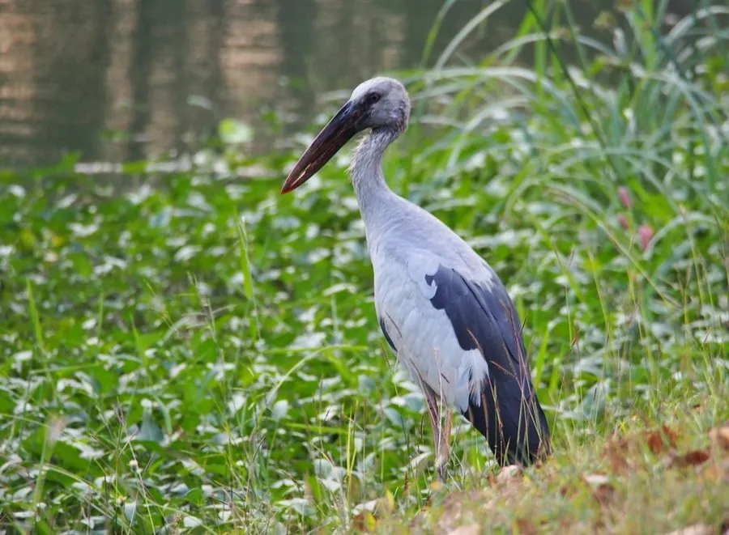

鸟类 · 动物界
钳嘴鹳 Anastomus oscitans

上下喙中部留有明显缝隙的大型涉禽，专以螺类为食，靠钳状喙夹碎螺壳，南亚湿地常见，近年在中国云南等地有扩散记录。
- 分类
- 门脊索动物门纲鸟纲目鹳形目科鹳科属钳嘴鹳属
- 栖息环境
- 淡水沼泽、湖泊、稻田、河滩与季节性泛滥平原
- 地理分布
- 印度、斯里兰卡、缅甸、泰国、中南半岛；中国云南、贵州等地有扩散记录
- 保护级别
- IUCN 无危（LC）；中国境内属受保护野生动物
物种志
钳嘴鹳体长约 68–81 厘米，体重 1–1.5 千克，通体灰白至乳白色，飞羽黑色，飞行时黑白对比鲜明。最奇特的是喙：上下喙在中间并不闭合，留有明显的梭形缝隙，只有喙尖相接，形如一把钳子，因此得名“钳嘴鹳”。繁殖期背、颈和胸部会泛出淡粉色，喙呈灰角色，腿粉红。
它们栖息于南亚与东南亚的淡水沼泽、湖泊、稻田和河滩，常成大群活动，与秃鹳、白鹭混群。食性高度特化，主要取食大型淡水螺，用钳状喙尖夹住螺壳，靠喙缘的细齿状结构固定，再以杠杆般的动作压碎螺壳取食螺肉，也吃蚌、蛙、蟹和大型昆虫。繁殖期在树上集群筑巢，每窝 2–4 枚卵，双亲孵卵约 25–30 天。近年来其分布区向东扩展，中国云南、贵州等地陆续有记录。
形态与习性
- 体长约 68–81 cm，体重 1–1.5 kg
- 食性大型淡水螺为主，兼食蚌、蛙、蟹与昆虫
- 喙部特征上下喙中段留有梭形缝隙，仅喙尖相接
- 繁殖树上集群筑巢，每窝 2–4 枚卵，孵卵约 25–30 天
- 群体规模常数十至数百只集群，与秃鹳、白鹭混群
- 分布扩展二十一世纪以来在中国云南、贵州等地出现繁殖记录
- 寿命野外约 15 年
趣味知识
- 钳嘴鹳的上下喙中间合不拢，留着一道梭形缝，像一把夹螺的钳子。
- 它吃螺时有固定套路：先夹住螺壳，再用杠杆式的动作把壳压碎。
- 繁殖季它的白色羽毛会泛出淡粉色，远看像披了一层霞光。